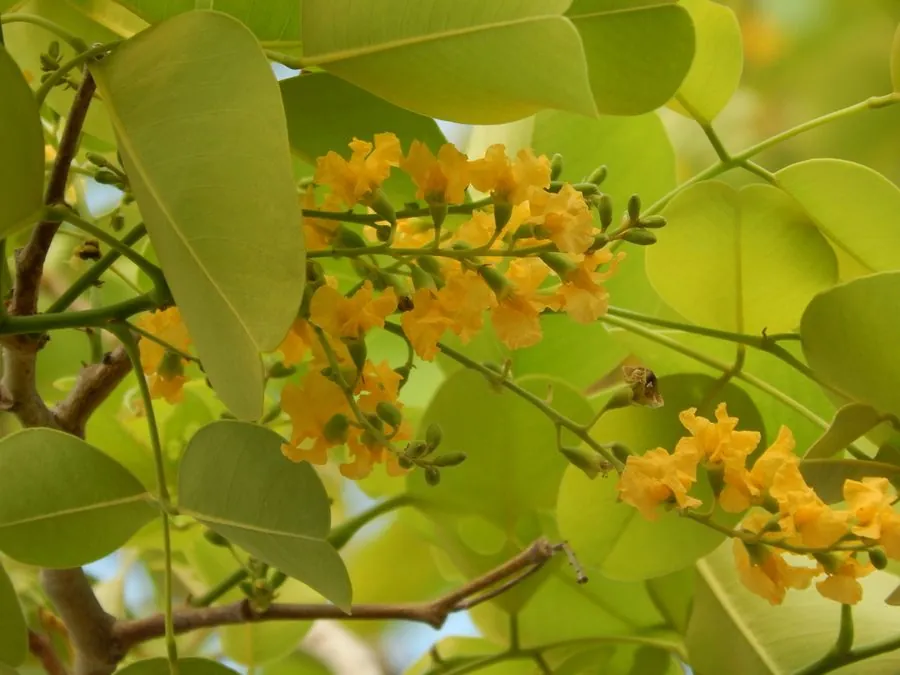

乔木 · 植物界
檀香紫檀 Pterocarpus santalinus

豆科紫檀属落叶乔木，心材紫红、质地致密沉水，是制作明清家具与工艺品的顶级红木，原产印度东高止山。
- 分类
- 门被子植物门纲木兰纲目豆目科豆科属紫檀属
- 栖息环境
- 印度东高止山海拔 300–800 米的干燥丘陵，喜光耐旱、土壤砾质
- 地理分布
- 原产印度安得拉邦；中国广东、广西、海南、云南等地引种栽培
- 保护级别
- IUCN 濒危（EN）；CITES 附录Ⅱ；中国未列入国家重点保护野生植物名录
物种志
檀香紫檀为豆科紫檀属落叶乔木，高八至十五米，树皮灰褐色，老树常呈不规则纵裂。奇数羽状复叶，小叶三至五对，阔卵形至近圆形，革质，表面深绿有光泽。花黄色，蝶形花冠，组成腋生或顶生的圆锥花序，花期三至五月；荚果圆形扁平，周围有宽翅，内含种子一至二粒，果期九至十一月。
檀香紫檀原产印度安得拉邦东高止山脉南段，生于干燥的丘陵砾质土壤上，中国广东、广西、海南、云南等地有引种。它极喜光，耐干旱瘠薄，忌积水，生长十分缓慢。心材紫红色至暗红色，纹理细密，密度大而入水即沉，有“十檀九空”之说，是制作高级家具、乐器和工艺雕刻的名贵红木。由于长期过度采伐，野生资源锐减，被 IUCN 列为濒危物种，并列入 CITES 附录Ⅱ。
形态与习性
- 株高8–15 m，树干常弯曲
- 花期3–5 月，花黄色、蝶形
- 果期9–11 月，荚果圆形有宽翅
- 光照极喜光，幼树也需充足阳光
- 水分耐干旱，忌土壤积水
- 土壤砾质红壤或石砾坡地
- 主要用途高级家具、乐器、工艺雕刻
趣味知识
- 檀香紫檀心材密度大，入水即沉，是红木中质地最坚硬的种类之一。
- 野生紫檀“十檀九空”，可取用的大料极少，因此有寸檀寸金之说。
- 它生长极慢，直径二十厘米的植株往往需要上百年时间。